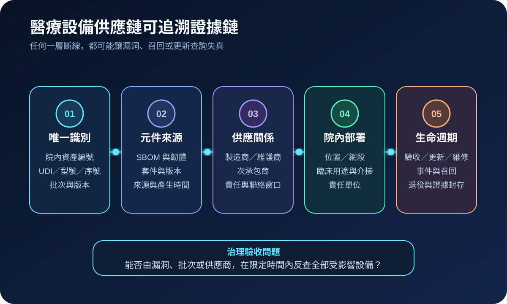
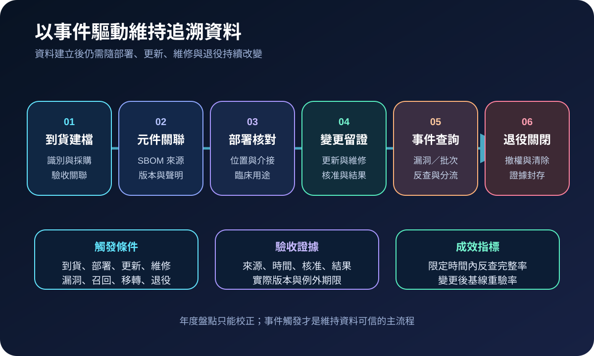
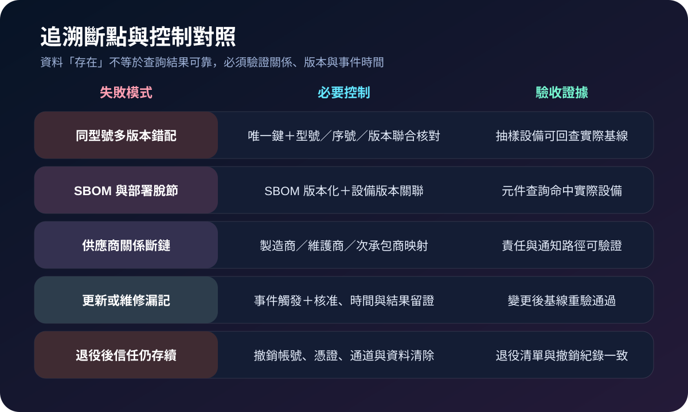

醫療資安國際觀察 · 2026-11-14
醫療設備供應鏈如何建立可追溯證據：從唯一識別到元件來源
作者：Dr. William｜醫療資訊與資安治理實務工作者
供應鏈事件若只能找到產品名稱，卻無法確認實際型號、序號、軟體元件、供應商批次與部署位置，修補、召回與隔離就會同時出現漏網與誤傷。可追溯性要回答的是「哪一個實體、含有哪些元件、由誰提供、目前在哪裡、何時變更」。
名詞解釋：識別、來源與監管鏈
可追溯性是沿著供應鏈與生命週期查回物件、來源、處理活動及關係的能力；UDI用於辨識特定醫療器材版本或型號，部分標示另含批號、序號、效期等生產識別；SBOM列出軟體元件與版本。三者用途不同，必須再連結院內資產編號、部署位置、臨床用途、維護商與變更紀錄，才足以支援資安處置。
國際現況與適用邊界
NIST IR 8536 提出跨組織整理、連結與查詢追溯資料的概念架構，透過具時間順序的事件紀錄、可驗證連結與選擇性揭露，支援產品來源與組成的獨立查驗。FDA 2026 醫療設備資安指引要求製造商以 SBOM、元件支援狀態、漏洞管理與更新能力支撐生命週期治理；FDA 的 UDI 系統則提供器材識別與公開資料庫架構。這些內容分屬美國聯邦技術方法與醫療器材監管制度，不是台灣醫療機構的直接法定義務。
台灣適用原則：可把國際方法轉成採購欄位、到貨驗收、設備與 SBOM 關聯、維護變更、事件查詢及退役證據；實際識別欄位、保存期限與責任分工仍須依台灣醫療器材、資安、個資、品質及院內程序確認。
規劃：先定義追溯問題與最小必要欄位
治理目標不應是收集最多資料，而是能在限定時間內回答高風險問題：某漏洞影響哪些在用設備、某批次位於哪些臨床區、某供應商元件被哪些系統使用、某次更新由誰核准且結果如何。最小欄位可包含院內資產編號、UDI／型號／序號、製造商與維護商、軟體與韌體版本、SBOM 版本、網路位置、臨床用途、責任單位、變更時間及證據位置。
實作：以事件驅動維持證據鏈
- 到貨建檔：掃描或核對唯一識別，綁定採購、驗收、型號、序號與責任單位。
- 元件關聯：匯入 SBOM，保留來源、格式、版本、產生時間與供應商聲明。
- 部署核對：記錄臨床用途、位置、網段、介接、軟體基線及替代流程。
- 變更留證：更新、換料、維修、憑證與組態變更都產生時間、核准與結果紀錄。
- 事件查詢：依漏洞、批次、供應商或元件反查受影響設備，再由臨床重要性分流。
- 退役關閉：撤銷帳號、憑證與遠端通道，完成資料清除並封存必要證據。

風險：資料存在不等於能追溯
常見失敗包括同型號多版本被視為同一資產、SBOM 未對應實際部署版本、維護商與次承包商關係缺失、手動表格無時間與來源證據、更新後未重建基線，以及退役設備仍保留憑證。控制重點是唯一鍵、版本化、關係完整性、權限分離、變更觸發與抽樣回查，而不是再增加一份孤立清冊。

可執行清單
- 能否由院內資產編號回查 UDI、型號、序號、版本、位置與臨床用途？
- SBOM 是否標記來源、產生時間、對應設備版本與供應商聲明？
- 製造商、維護商、次承包商及元件供應者的關係是否可查？
- 更新、換料、維修與組態變更是否會自動觸發基線重驗？
- 能否在演練時由單一 CVE、批次或供應商反查所有受影響設備？
- 查詢結果是否連結臨床重要性、替代流程、處置責任與完成證據？
- 退役時是否撤銷身分、憑證、遠端通道並完成資料清除？
來源
- NIST｜IR 8536: Supply Chain Traceability Principles: A Manufacturing Meta-Framework（發布：2026-09-09；查閱：2026-11-14）
- FDA｜Cybersecurity in Medical Devices: Quality System Considerations and Content of Premarket Submissions（發布：2026-02-03；查閱：2026-11-14）
- FDA｜Unique Device Identification System（頁面發布：2024-08-09；查閱：2026-11-14）
內容說明
本文依健康台灣深耕計畫相關治理內容整理，並參考 NIST 與 FDA 一手資料，說明醫療設備、軟體元件、供應商、部署位置及變更紀錄的追溯治理；不把美國技術方法、上市前指引或 UDI 制度視為台灣醫療機構的法定義務，也不取代主管機關規範、醫療器材評估、臨床驗證、契約或法律意見。